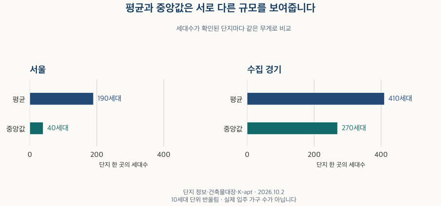

아파트의 진화 · 단지 세대수
서울 아파트 단지는 평균 몇 세대일까? 평균·중앙값 비교
서울·수집 경기 아파트 단지의 평균·중앙값과 300세대 미만·1,000세대 이상 비중을 비교합니다. 단지 수와 세대수 분모, 준공 연대, 원천별 포함 범위와 누락을 함께 확인합니다.
분석 기간 · 수집 자료 기준 2026.10.2 · 단지별 세대수 | 자료 기준일 · 공식 자료 범위 확인 2026-10-16
‘아파트 한 단지는 보통 몇 세대일까?’라는 질문에는 평균만으로 답하기 어렵습니다. 작은 단지를 어디까지 포함하는지, 단지마다 같은 무게를 주는지에 따라 숫자가 달라집니다. 서울·수집 경기의 세대수 확인 자료로 평균과 중앙값, 규모별 비중을 비교했습니다.
건물 한 동과 아파트 한 단지는 같은 단위인가요?
다릅니다. 단지는 여러 동으로 이루어질 수 있고, 같은 주소에 서로 다른 단지가 있을 수도 있습니다. 거래 기록에서 쓰인 식별 정보가 여러 개라고 해서 각각을 별도 단지로 세지도 않습니다. 이 글은 기존에 확인한 단지 구분을 유지하고 이름이나 주소만으로 새로 합치지 않았습니다.
600세대와 400세대를 두 단지로 세면 단지당 평균은 500세대입니다. 두 곳을 한 단지로 묶으면 1,000세대가 됩니다. 세대수 합계는 같지만 단지당 평균은 달라집니다. 실제 자료에서 어느 구분이 맞는지는 별도 확인이 필요하며, 이 예시를 실제 단지의 재분류에 적용하지 않았습니다.
건축물대장의 한 주소에 적힌 세대수를 여러 단지에 똑같이 나눠 주지 않았습니다. 단지별로 구분할 근거가 없으면 해당 자료만으로 세대수를 정하지 않고, 독립적으로 연결이 확인된 다른 자료가 있는지 확인했습니다.
평균보다 중앙값이 작은 이유는 무엇인가요?
소규모 단지가 많이 포함되고 일부 큰 단지가 평균을 끌어올리기 때문입니다. 평균은 알려진 세대수를 더해 단지 수로 나눈 값이고, 중앙값은 단지를 세대수 순으로 세웠을 때 가운데에 해당하는 값입니다. 두 값은 서로 다른 질문에 답합니다.

| 지역·조건 | 평균 | 중앙값 | 가운데 50% | 선택 단지 중 세대수 확인 | 전체 단지 중 선택 | 알려진 세대수 중 포함 |
|---|---|---|---|---|---|---|
| 서울 · 전체 | 190세대 | 40세대 | 20–190세대 | 90–100% | 90–100% | 90–100% |
| 수집 경기 · 전체 | 410세대 | 270세대 | 50–600세대 | 80–90% | 90–100% | 90–100% |
단지 규모의 가운데 50%는 서울 약 20~190세대, 수집 경기 약 50~600세대입니다. 평균에 가까운 단지만 모여 있는 분포가 아닙니다. ‘중간 정도의 단지’를 찾는 질문에는 중앙값과 가운데 50%를 함께 보는 편이 적절합니다.
기본 집계에서 세대수를 확인한 단지 비중은 서울 90~100%, 수집 경기 80~90% 구간입니다. 세대수 미상 단지를 0세대로 넣어 평균을 낮추지 않았습니다. 구간은 하한을 포함하고 상한은 포함하지 않으며, 90~100% 구간만 100%를 포함합니다.
300세대 미만과 1,000세대 이상 단지는 얼마나 차지하나요?
단지 수의 비중과 세대수의 비중을 구분해야 합니다. 서울에서 300세대 미만은 알려진 단지 수의 약 85%이지만, 알려진 세대수 합계에서는 약 25%입니다. 수집 경기는 각각 약 55%와 약 10%입니다.
| 지역·조건 | 300세대 미만 · 단지 | 300~499세대 · 단지 | 500~999세대 · 단지 | 1,000세대 이상 · 단지 | 300세대 미만 · 세대수 | 300~499세대 · 세대수 | 500~999세대 · 세대수 | 1,000세대 이상 · 세대수 |
|---|---|---|---|---|---|---|---|---|
| 서울 · 전체 | 85% | 5% | 5% | 5% | 25% | 15% | 25% | 35% |
| 수집 경기 · 전체 | 55% | 15% | 20% | 10% | 10% | 15% | 35% | 35% |
1,000세대 이상은 단지 수로 서울 약 5%, 수집 경기 약 10%입니다. 반면 세대수 합계에서 차지하는 비중은 두 지역 모두 약 35%입니다. 단지가 몇 곳인지 묻는 것과, 얼마나 많은 세대가 그 규모의 단지에 속하는지 묻는 것은 다릅니다.
세대수 비중의 분모는 세대수가 알려진 단지의 합계입니다. 세대수 미상 단지까지 포함한 모든 주택의 비중이나 실제 거주 가구의 비중이 아닙니다. 5%포인트 단위 반올림 때문에 표의 비중을 더해도 100%가 되지 않을 수 있으며, 0%로 표시됐다고 실제로 한 곳도 없다는 뜻은 아닙니다.
면적별 세대수가 있는 단지만 보면 왜 숫자가 커지나요?
비교 대상이 달라지기 때문입니다. 면적별 세대수가 확인된 단지로 한정하면 평균은 서울 약 510세대·수집 경기 약 620세대, 중앙값은 약 310세대·약 500세대입니다. 기본 집계의 평균 약 190세대·약 410세대와 차이가 큽니다. 같은 단지의 숫자만 바꾼 실험은 아닙니다.
이 부분집합이 포함하는 단지는 전체의 서울 20~30%, 수집 경기 50~60% 구간입니다. 알려진 세대수 합계로 보면 각각 80~90%, 90~100% 구간입니다. 큰 단지가 상대적으로 많이 포함되므로, 이 결과를 전체 단지의 평균으로 바꿔 적을 수 없습니다.
기본 집계는 유효한 면적별 세대수의 전체 합계를 먼저 사용하고, 없으면 단지별로 식별 가능한 건축물대장 값, 검증한 주거 표제부 합계, 등록 기본정보 순으로 확인했습니다. 서로 다른 자료의 값이 다르다는 사실은 따로 남겼습니다. 일부 면적만 더하거나 주소의 총세대수를 임의로 배분하지 않았습니다.
세대수를 확인한 자료별 분포 펼치기
| 지역·조건 | 평균 | 중앙값 | 가운데 50% | 선택 단지 중 세대수 확인 | 전체 단지 중 선택 | 알려진 세대수 중 포함 |
|---|---|---|---|---|---|---|
| 서울 · 면적별 세대수 합계 | 510세대 | 310세대 | 190–600세대 | 90–100% | 20–30% | 80–90% |
| 서울 · 건축물대장 우선값 | 50세대 | 20세대 | 10–40세대 | 90–100% | 60–70% | 10–20% |
| 서울 · 주거 표제부 합계 | 보류 | 보류 | 보류 | 자료 부족 | 자료 부족 | 자료 부족 |
| 서울 · 등록 기본정보 | 보류 | 보류 | 보류 | 자료 부족 | 자료 부족 | 자료 부족 |
| 서울 · 세대수 미상 | 보류 | 보류 | 보류 | 0–10% | 0–10% | 0–10% |
| 수집 경기 · 면적별 세대수 합계 | 620세대 | 500세대 | 300–800세대 | 90–100% | 50–60% | 90–100% |
| 수집 경기 · 건축물대장 우선값 | 90세대 | 30세대 | 20–70세대 | 90–100% | 30–40% | 0–10% |
| 수집 경기 · 주거 표제부 합계 | 보류 | 보류 | 보류 | 자료 부족 | 자료 부족 | 자료 부족 |
| 수집 경기 · 등록 기본정보 | 보류 | 보류 | 보류 | 자료 부족 | 자료 부족 | 자료 부족 |
| 수집 경기 · 세대수 미상 | 보류 | 보류 | 보류 | 0–10% | 10–20% | 0–10% |
이 표의 각 원천은 서로 다른 단지 집합입니다. 한 단지에 여러 자료의 값이 있을 때 모두 중복 집계한 결과가 아닙니다. 세대수 미상 범주는 규모의 평균을 계산할 수 없으며, 관측이 적거나 한 단지에 집중된 비교도 보류했습니다.
원천 간 세대수가 다른 단지를 제외하면 평균은 서울 약 170세대·수집 경기 약 400세대, 중앙값은 약 30세대·약 240세대입니다. 등록 유형과 준공 연도가 맞는 단지만 남긴 비교도 함께 제시했습니다. 반올림한 표시값이 같더라도 실제 비교 대상과 원래 수치까지 같다는 뜻은 아닙니다.
원천 불일치 제외 · 전체와 연대별 비교 펼치기
| 지역·조건 | 평균 | 중앙값 | 가운데 50% | 선택 단지 중 세대수 확인 | 전체 단지 중 선택 | 알려진 세대수 중 포함 |
|---|---|---|---|---|---|---|
| 서울 · 전체 | 170세대 | 30세대 | 20–140세대 | 90–100% | 90–100% | 80–90% |
| 서울 · 1980년 이전 | 160세대 | 60세대 | 30–130세대 | 70–80% | 90–100% | 60–70% |
| 서울 · 1980년대 | 460세대 | 300세대 | 120–560세대 | 60–70% | 80–90% | 60–70% |
| 서울 · 1990년대 | 190세대 | 50세대 | 10–220세대 | 90–100% | 80–90% | 60–70% |
| 서울 · 2000년대 | 100세대 | 20세대 | 10–70세대 | 90–100% | 90–100% | 80–90% |
| 서울 · 2010년대 | 250세대 | 70세대 | 30–290세대 | 90–100% | 90–100% | 90–100% |
| 서울 · 2020~2026년 | 380세대 | 100세대 | 40–410세대 | 90–100% | 90–100% | 90–100% |
| 서울 · 연도 미상 | 보류 | 보류 | 보류 | 자료 부족 | 자료 부족 | 자료 부족 |
| 서울 · 미래 연도 | 보류 | 보류 | 보류 | 자료 부족 | 자료 부족 | 자료 부족 |
| 수집 경기 · 전체 | 400세대 | 240세대 | 40–590세대 | 80–90% | 90–100% | 80–90% |
| 수집 경기 · 1980년 이전 | 보류 | 보류 | 보류 | 자료 부족 | 자료 부족 | 자료 부족 |
| 수집 경기 · 1980년대 | 150세대 | 70세대 | 40–100세대 | 60–70% | 90–100% | 80–90% |
| 수집 경기 · 1990년대 | 410세대 | 280세대 | 70–590세대 | 70–80% | 80–90% | 80–90% |
| 수집 경기 · 2000년대 | 330세대 | 220세대 | 20–490세대 | 90–100% | 90–100% | 80–90% |
| 수집 경기 · 2010년대 | 490세대 | 360세대 | 50–750세대 | 90–100% | 90–100% | 90–100% |
| 수집 경기 · 2020~2026년 | 580세대 | 420세대 | 50–830세대 | 90–100% | 90–100% | 90–100% |
| 수집 경기 · 연도 미상 | 보류 | 보류 | 보류 | 자료 부족 | 자료 부족 | 자료 부족 |
| 수집 경기 · 미래 연도 | 보류 | 보류 | 보류 | 자료 부족 | 자료 부족 | 자료 부족 |
| 지역·조건 | 300세대 미만 · 단지 | 300~499세대 · 단지 | 500~999세대 · 단지 | 1,000세대 이상 · 단지 | 300세대 미만 · 세대수 | 300~499세대 · 세대수 | 500~999세대 · 세대수 | 1,000세대 이상 · 세대수 |
|---|---|---|---|---|---|---|---|---|
| 서울 · 전체 | 85% | 5% | 5% | 5% | 30% | 15% | 25% | 35% |
| 서울 · 1980년 이전 | 보류 | 보류 | 보류 | 보류 | 보류 | 보류 | 보류 | 보류 |
| 서울 · 1980년대 | 보류 | 보류 | 보류 | 보류 | 보류 | 보류 | 보류 | 보류 |
| 서울 · 1990년대 | 80% | 10% | 5% | 5% | 30% | 20% | 25% | 30% |
| 서울 · 2000년대 | 95% | 5% | 5% | 0% | 40% | 10% | 20% | 25% |
| 서울 · 2010년대 | 75% | 10% | 10% | 5% | 20% | 15% | 25% | 40% |
| 서울 · 2020~2026년 | 70% | 10% | 10% | 10% | 15% | 10% | 20% | 55% |
| 서울 · 연도 미상 | 보류 | 보류 | 보류 | 보류 | 보류 | 보류 | 보류 | 보류 |
| 서울 · 미래 연도 | 보류 | 보류 | 보류 | 보류 | 보류 | 보류 | 보류 | 보류 |
| 수집 경기 · 전체 | 55% | 15% | 20% | 10% | 15% | 15% | 35% | 35% |
| 수집 경기 · 1980년 이전 | 보류 | 보류 | 보류 | 보류 | 보류 | 보류 | 보류 | 보류 |
| 수집 경기 · 1980년대 | 보류 | 보류 | 보류 | 보류 | 보류 | 보류 | 보류 | 보류 |
| 수집 경기 · 1990년대 | 55% | 15% | 20% | 10% | 15% | 15% | 40% | 30% |
| 수집 경기 · 2000년대 | 60% | 20% | 20% | 5% | 15% | 25% | 40% | 25% |
| 수집 경기 · 2010년대 | 45% | 15% | 25% | 15% | 10% | 10% | 40% | 40% |
| 수집 경기 · 2020~2026년 | 45% | 10% | 25% | 20% | 5% | 10% | 30% | 55% |
| 수집 경기 · 연도 미상 | 보류 | 보류 | 보류 | 보류 | 보류 | 보류 | 보류 | 보류 |
| 수집 경기 · 미래 연도 | 보류 | 보류 | 보류 | 보류 | 보류 | 보류 | 보류 | 보류 |
등록 유형·연도 일치 · 전체와 연대별 비교 펼치기
| 지역·조건 | 평균 | 중앙값 | 가운데 50% | 선택 단지 중 세대수 확인 | 전체 단지 중 선택 | 알려진 세대수 중 포함 |
|---|---|---|---|---|---|---|
| 서울 · 전체 | 510세대 | 310세대 | 190–600세대 | 90–100% | 20–30% | 70–80% |
| 서울 · 1980년 이전 | 640세대 | 340세대 | 190–590세대 | 90–100% | 10–20% | 60–70% |
| 서울 · 1980년대 | 700세대 | 480세대 | 280–800세대 | 90–100% | 50–60% | 80–90% |
| 서울 · 1990년대 | 440세대 | 290세대 | 190–540세대 | 90–100% | 40–50% | 80–90% |
| 서울 · 2000년대 | 430세대 | 250세대 | 160–480세대 | 90–100% | 20–30% | 70–80% |
| 서울 · 2010년대 | 590세대 | 420세대 | 230–770세대 | 90–100% | 30–40% | 80–90% |
| 서울 · 2020~2026년 | 730세대 | 450세대 | 270–890세대 | 90–100% | 30–40% | 70–80% |
| 서울 · 연도 미상 | 보류 | 보류 | 보류 | 자료 부족 | 자료 부족 | 자료 부족 |
| 서울 · 미래 연도 | 보류 | 보류 | 보류 | 자료 부족 | 자료 부족 | 자료 부족 |
| 수집 경기 · 전체 | 620세대 | 500세대 | 300–800세대 | 90–100% | 50–60% | 90–100% |
| 수집 경기 · 1980년 이전 | 보류 | 보류 | 보류 | 자료 부족 | 자료 부족 | 자료 부족 |
| 수집 경기 · 1980년대 | 580세대 | 370세대 | 210–780세대 | 90–100% | 10–20% | 60–70% |
| 수집 경기 · 1990년대 | 560세대 | 460세대 | 270–720세대 | 90–100% | 50–60% | 80–90% |
| 수집 경기 · 2000년대 | 550세대 | 460세대 | 280–690세대 | 90–100% | 50–60% | 90–100% |
| 수집 경기 · 2010년대 | 720세대 | 620세대 | 350–960세대 | 90–100% | 60–70% | 90–100% |
| 수집 경기 · 2020~2026년 | 820세대 | 660세대 | 400–1,000세대 | 90–100% | 50–60% | 80–90% |
| 수집 경기 · 연도 미상 | 보류 | 보류 | 보류 | 자료 부족 | 자료 부족 | 자료 부족 |
| 수집 경기 · 미래 연도 | 보류 | 보류 | 보류 | 자료 부족 | 자료 부족 | 자료 부족 |
| 지역·조건 | 300세대 미만 · 단지 | 300~499세대 · 단지 | 500~999세대 · 단지 | 1,000세대 이상 · 단지 | 300세대 미만 · 세대수 | 300~499세대 · 세대수 | 500~999세대 · 세대수 | 1,000세대 이상 · 세대수 |
|---|---|---|---|---|---|---|---|---|
| 서울 · 전체 | 50% | 20% | 20% | 10% | 20% | 15% | 25% | 40% |
| 서울 · 1980년 이전 | 보류 | 보류 | 보류 | 보류 | 보류 | 보류 | 보류 | 보류 |
| 서울 · 1980년대 | 30% | 30% | 25% | 20% | 10% | 15% | 25% | 50% |
| 서울 · 1990년대 | 50% | 20% | 20% | 10% | 25% | 20% | 30% | 25% |
| 서울 · 2000년대 | 60% | 20% | 15% | 5% | 25% | 15% | 25% | 35% |
| 서울 · 2010년대 | 40% | 20% | 25% | 15% | 15% | 15% | 30% | 45% |
| 서울 · 2020~2026년 | 35% | 20% | 25% | 20% | 10% | 10% | 25% | 55% |
| 서울 · 연도 미상 | 보류 | 보류 | 보류 | 보류 | 보류 | 보류 | 보류 | 보류 |
| 서울 · 미래 연도 | 보류 | 보류 | 보류 | 보류 | 보류 | 보류 | 보류 | 보류 |
| 수집 경기 · 전체 | 25% | 25% | 35% | 15% | 10% | 15% | 40% | 35% |
| 수집 경기 · 1980년 이전 | 보류 | 보류 | 보류 | 보류 | 보류 | 보류 | 보류 | 보류 |
| 수집 경기 · 1980년대 | 보류 | 보류 | 보류 | 보류 | 보류 | 보류 | 보류 | 보류 |
| 수집 경기 · 1990년대 | 30% | 25% | 30% | 10% | 10% | 20% | 40% | 30% |
| 수집 경기 · 2000년대 | 30% | 30% | 30% | 10% | 10% | 20% | 40% | 25% |
| 수집 경기 · 2010년대 | 20% | 20% | 40% | 20% | 5% | 10% | 40% | 45% |
| 수집 경기 · 2020~2026년 | 20% | 20% | 40% | 25% | 5% | 10% | 35% | 50% |
| 수집 경기 · 연도 미상 | 보류 | 보류 | 보류 | 보류 | 보류 | 보류 | 보류 | 보류 |
| 수집 경기 · 미래 연도 | 보류 | 보류 | 보류 | 보류 | 보류 | 보류 | 보류 | 보류 |
면적별 세대수 확인 · 전체와 연대별 비교 펼치기
| 지역·조건 | 평균 | 중앙값 | 가운데 50% | 선택 단지 중 세대수 확인 | 전체 단지 중 선택 | 알려진 세대수 중 포함 |
|---|---|---|---|---|---|---|
| 서울 · 전체 | 510세대 | 310세대 | 190–600세대 | 90–100% | 20–30% | 80–90% |
| 서울 · 1980년 이전 | 620세대 | 340세대 | 180–590세대 | 90–100% | 10–20% | 60–70% |
| 서울 · 1980년대 | 690세대 | 480세대 | 280–790세대 | 90–100% | 50–60% | 90–100% |
| 서울 · 1990년대 | 440세대 | 280세대 | 180–540세대 | 90–100% | 40–50% | 80–90% |
| 서울 · 2000년대 | 430세대 | 250세대 | 160–470세대 | 90–100% | 20–30% | 70–80% |
| 서울 · 2010년대 | 590세대 | 420세대 | 230–780세대 | 90–100% | 30–40% | 80–90% |
| 서울 · 2020~2026년 | 740세대 | 460세대 | 270–940세대 | 90–100% | 30–40% | 70–80% |
| 서울 · 연도 미상 | 보류 | 보류 | 보류 | 자료 부족 | 자료 부족 | 자료 부족 |
| 서울 · 미래 연도 | 보류 | 보류 | 보류 | 자료 부족 | 자료 부족 | 자료 부족 |
| 수집 경기 · 전체 | 620세대 | 500세대 | 300–800세대 | 90–100% | 50–60% | 90–100% |
| 수집 경기 · 1980년 이전 | 보류 | 보류 | 보류 | 자료 부족 | 자료 부족 | 자료 부족 |
| 수집 경기 · 1980년대 | 560세대 | 370세대 | 210–750세대 | 90–100% | 10–20% | 60–70% |
| 수집 경기 · 1990년대 | 560세대 | 460세대 | 270–710세대 | 90–100% | 50–60% | 80–90% |
| 수집 경기 · 2000년대 | 550세대 | 460세대 | 280–680세대 | 90–100% | 50–60% | 90–100% |
| 수집 경기 · 2010년대 | 720세대 | 620세대 | 350–960세대 | 90–100% | 60–70% | 90–100% |
| 수집 경기 · 2020~2026년 | 820세대 | 660세대 | 400–1,000세대 | 90–100% | 60–70% | 80–90% |
| 수집 경기 · 연도 미상 | 보류 | 보류 | 보류 | 자료 부족 | 자료 부족 | 자료 부족 |
| 수집 경기 · 미래 연도 | 보류 | 보류 | 보류 | 자료 부족 | 자료 부족 | 자료 부족 |
| 지역·조건 | 300세대 미만 · 단지 | 300~499세대 · 단지 | 500~999세대 · 단지 | 1,000세대 이상 · 단지 | 300세대 미만 · 세대수 | 300~499세대 · 세대수 | 500~999세대 · 세대수 | 1,000세대 이상 · 세대수 |
|---|---|---|---|---|---|---|---|---|
| 서울 · 전체 | 50% | 20% | 20% | 10% | 20% | 15% | 25% | 40% |
| 서울 · 1980년 이전 | 보류 | 보류 | 보류 | 보류 | 보류 | 보류 | 보류 | 보류 |
| 서울 · 1980년대 | 30% | 30% | 25% | 20% | 10% | 15% | 25% | 50% |
| 서울 · 1990년대 | 50% | 20% | 20% | 10% | 25% | 20% | 30% | 30% |
| 서울 · 2000년대 | 60% | 20% | 15% | 5% | 25% | 15% | 25% | 35% |
| 서울 · 2010년대 | 40% | 20% | 25% | 15% | 15% | 15% | 30% | 45% |
| 서울 · 2020~2026년 | 35% | 20% | 25% | 20% | 10% | 10% | 25% | 55% |
| 서울 · 연도 미상 | 보류 | 보류 | 보류 | 보류 | 보류 | 보류 | 보류 | 보류 |
| 서울 · 미래 연도 | 보류 | 보류 | 보류 | 보류 | 보류 | 보류 | 보류 | 보류 |
| 수집 경기 · 전체 | 25% | 25% | 35% | 15% | 10% | 15% | 40% | 35% |
| 수집 경기 · 1980년 이전 | 보류 | 보류 | 보류 | 보류 | 보류 | 보류 | 보류 | 보류 |
| 수집 경기 · 1980년대 | 보류 | 보류 | 보류 | 보류 | 보류 | 보류 | 보류 | 보류 |
| 수집 경기 · 1990년대 | 30% | 25% | 30% | 10% | 10% | 20% | 40% | 30% |
| 수집 경기 · 2000년대 | 30% | 30% | 30% | 10% | 10% | 20% | 40% | 25% |
| 수집 경기 · 2010년대 | 20% | 20% | 40% | 20% | 5% | 10% | 40% | 45% |
| 수집 경기 · 2020~2026년 | 20% | 20% | 40% | 25% | 5% | 10% | 35% | 50% |
| 수집 경기 · 연도 미상 | 보류 | 보류 | 보류 | 보류 | 보류 | 보류 | 보류 | 보류 |
| 수집 경기 · 미래 연도 | 보류 | 보류 | 보류 | 보류 | 보류 | 보류 | 보류 | 보류 |
반대 방향의 한계도 있습니다. 건축물대장 값이 한 주소에서 분명하게 식별되더라도, 그 주소가 거래에서 같은 단지로 취급되는 모든 동을 포함한다고 보장할 수는 없습니다. 총괄 자료와 동별 자료가 같은 일부 범위에 함께 맞을 수도 있습니다. 넓은 목록과 면적 확인 집합을 함께 제시하는 이유입니다.
표의 ‘선택 단지 중 세대수 확인’은 선택한 단지 안에서 계산합니다. 나머지 확인 비율은 같은 지역·같은 준공 연대의 기본 집계가 분모입니다. 세대수 합계에는 알려지지 않은 세대수를 추정해 더하지 않았습니다.
최근 준공 단지일수록 규모가 계속 커졌나요?
모든 연대에서 계속 커지는 흐름은 아닙니다. 서울의 평균은 1980년대 약 560세대, 2000년대 약 120세대, 2020~2026년 약 380세대입니다. 수집 경기 역시 1990년대 약 430세대에서 2000년대 약 360세대로 낮아졌다가 2020~2026년 약 580세대로 높아집니다.
| 지역·조건 | 평균 | 중앙값 | 가운데 50% | 선택 단지 중 세대수 확인 | 전체 단지 중 선택 | 알려진 세대수 중 포함 |
|---|---|---|---|---|---|---|
| 서울 · 1980년 이전 | 210세대 | 70세대 | 30–170세대 | 70–80% | 90–100% | 90–100% |
| 서울 · 1980년대 | 560세대 | 380세대 | 160–640세대 | 70–80% | 90–100% | 90–100% |
| 서울 · 1990년대 | 240세대 | 100세대 | 20–280세대 | 90–100% | 90–100% | 90–100% |
| 서울 · 2000년대 | 120세대 | 20세대 | 10–80세대 | 90–100% | 90–100% | 90–100% |
| 서울 · 2010년대 | 260세대 | 80세대 | 30–300세대 | 90–100% | 90–100% | 90–100% |
| 서울 · 2020~2026년 | 380세대 | 100세대 | 40–420세대 | 90–100% | 90–100% | 90–100% |
| 서울 · 연도 미상 | 보류 | 보류 | 보류 | 자료 부족 | 자료 부족 | 자료 부족 |
| 서울 · 미래 연도 | 보류 | 보류 | 보류 | 자료 부족 | 자료 부족 | 자료 부족 |
| 수집 경기 · 1980년 이전 | 보류 | 보류 | 보류 | 자료 부족 | 자료 부족 | 자료 부족 |
| 수집 경기 · 1980년대 | 170세대 | 70세대 | 40–130세대 | 70–80% | 90–100% | 90–100% |
| 수집 경기 · 1990년대 | 430세대 | 300세대 | 90–600세대 | 80–90% | 90–100% | 90–100% |
| 수집 경기 · 2000년대 | 360세대 | 250세대 | 40–520세대 | 90–100% | 90–100% | 90–100% |
| 수집 경기 · 2010년대 | 490세대 | 360세대 | 50–750세대 | 90–100% | 90–100% | 90–100% |
| 수집 경기 · 2020~2026년 | 580세대 | 420세대 | 50–830세대 | 90–100% | 90–100% | 90–100% |
| 수집 경기 · 연도 미상 | 보류 | 보류 | 보류 | 자료 부족 | 자료 부족 | 자료 부족 |
| 수집 경기 · 미래 연도 | 보류 | 보류 | 보류 | 자료 부족 | 자료 부족 | 자료 부족 |
2020~2026년의 중앙값은 서울 약 100세대, 수집 경기 약 420세대입니다. 같은 연대의 평균 약 380세대·약 580세대와 차이가 남습니다. 준공 연도 하나만으로 특정 단지의 크기를 판단하기 어렵습니다.
준공 연대별 소단지·대단지 비중 펼치기
| 지역·조건 | 300세대 미만 · 단지 | 300~499세대 · 단지 | 500~999세대 · 단지 | 1,000세대 이상 · 단지 | 300세대 미만 · 세대수 | 300~499세대 · 세대수 | 500~999세대 · 세대수 | 1,000세대 이상 · 세대수 |
|---|---|---|---|---|---|---|---|---|
| 서울 · 1980년 이전 | 보류 | 보류 | 보류 | 보류 | 보류 | 보류 | 보류 | 보류 |
| 서울 · 1980년대 | 45% | 20% | 20% | 15% | 10% | 15% | 25% | 50% |
| 서울 · 1990년대 | 75% | 10% | 10% | 5% | 25% | 15% | 25% | 30% |
| 서울 · 2000년대 | 90% | 5% | 5% | 0% | 35% | 15% | 20% | 30% |
| 서울 · 2010년대 | 75% | 10% | 10% | 5% | 20% | 15% | 25% | 40% |
| 서울 · 2020~2026년 | 70% | 10% | 10% | 10% | 15% | 10% | 25% | 50% |
| 서울 · 연도 미상 | 보류 | 보류 | 보류 | 보류 | 보류 | 보류 | 보류 | 보류 |
| 서울 · 미래 연도 | 보류 | 보류 | 보류 | 보류 | 보류 | 보류 | 보류 | 보류 |
| 수집 경기 · 1980년 이전 | 보류 | 보류 | 보류 | 보류 | 보류 | 보류 | 보류 | 보류 |
| 수집 경기 · 1980년대 | 보류 | 보류 | 보류 | 보류 | 보류 | 보류 | 보류 | 보류 |
| 수집 경기 · 1990년대 | 50% | 20% | 25% | 10% | 15% | 20% | 40% | 30% |
| 수집 경기 · 2000년대 | 55% | 20% | 20% | 5% | 15% | 20% | 40% | 25% |
| 수집 경기 · 2010년대 | 45% | 10% | 25% | 15% | 10% | 10% | 40% | 40% |
| 수집 경기 · 2020~2026년 | 45% | 10% | 25% | 20% | 5% | 10% | 35% | 50% |
| 수집 경기 · 연도 미상 | 보류 | 보류 | 보류 | 보류 | 보류 | 보류 | 보류 | 보류 |
| 수집 경기 · 미래 연도 | 보류 | 보류 | 보류 | 보류 | 보류 | 보류 | 보류 | 보류 |
비교 대상이 적은 규모 범주가 있으면 비중 전체를 보류했습니다. 보류와 0%는 다릅니다. 세대수 비중은 해당 연대에서 세대수를 확인한 단지의 합계가 분모입니다.
이 비교는 현재 수집 목록에 남아 있는 단지를 준공 연도로 나눈 결과입니다. 철거된 단지까지 복원한 과거 당시의 분포가 아니며, 준공 이후 세대수나 단지 경계가 바뀐 모든 이력을 추적한 것도 아닙니다. 연대별 자료 포함 차이와 살아남은 단지의 구성도 함께 영향을 줍니다.
수집한 모든 지역의 분포와 확인 범위 펼치기
| 지역·조건 | 평균 | 중앙값 | 가운데 50% | 선택 단지 중 세대수 확인 | 전체 단지 중 선택 | 알려진 세대수 중 포함 |
|---|---|---|---|---|---|---|
| 종로구 | 110세대 | 20세대 | 10–110세대 | 80–90% | 90–100% | 90–100% |
| 중구 | 보류 | 보류 | 보류 | 80–90% | 90–100% | 90–100% |
| 용산구 | 150세대 | 50세대 | 20–180세대 | 90–100% | 90–100% | 90–100% |
| 성동구 | 390세대 | 230세대 | 60–530세대 | 90–100% | 90–100% | 90–100% |
| 광진구 | 150세대 | 40세대 | 20–180세대 | 90–100% | 90–100% | 90–100% |
| 동대문구 | 220세대 | 50세대 | 20–230세대 | 90–100% | 90–100% | 90–100% |
| 중랑구 | 180세대 | 60세대 | 20–190세대 | 90–100% | 90–100% | 90–100% |
| 성북구 | 380세대 | 200세대 | 30–510세대 | 90–100% | 90–100% | 90–100% |
| 강북구 | 200세대 | 40세대 | 20–200세대 | 90–100% | 90–100% | 90–100% |
| 도봉구 | 290세대 | 110세대 | 20–300세대 | 90–100% | 90–100% | 90–100% |
| 노원구 | 440세대 | 220세대 | 60–510세대 | 80–90% | 90–100% | 90–100% |
| 은평구 | 120세대 | 20세대 | 20–100세대 | 90–100% | 90–100% | 90–100% |
| 서대문구 | 160세대 | 20세대 | 20–120세대 | 90–100% | 90–100% | 90–100% |
| 마포구 | 180세대 | 50세대 | 20–210세대 | 90–100% | 90–100% | 90–100% |
| 양천구 | 170세대 | 40세대 | 20–130세대 | 90–100% | 90–100% | 90–100% |
| 강서구 | 150세대 | 40세대 | 20–120세대 | 90–100% | 90–100% | 90–100% |
| 구로구 | 110세대 | 10세대 | 10–100세대 | 90–100% | 90–100% | 90–100% |
| 금천구 | 170세대 | 30세대 | 20–120세대 | 90–100% | 90–100% | 90–100% |
| 영등포구 | 290세대 | 190세대 | 80–380세대 | 90–100% | 90–100% | 90–100% |
| 동작구 | 250세대 | 110세대 | 20–330세대 | 90–100% | 90–100% | 90–100% |
| 관악구 | 150세대 | 30세대 | 20–120세대 | 90–100% | 90–100% | 90–100% |
| 서초구 | 120세대 | 20세대 | 10–90세대 | 90–100% | 90–100% | 90–100% |
| 강남구 | 190세대 | 30세대 | 20–170세대 | 80–90% | 90–100% | 90–100% |
| 송파구 | 280세대 | 30세대 | 20–220세대 | 90–100% | 90–100% | 90–100% |
| 강동구 | 200세대 | 40세대 | 20–110세대 | 90–100% | 90–100% | 90–100% |
| 수원시 장안구 | 360세대 | 150세대 | 70–480세대 | 90–100% | 90–100% | 90–100% |
| 수원시 권선구 | 370세대 | 250세대 | 20–540세대 | 90–100% | 90–100% | 90–100% |
| 수원시 팔달구 | 360세대 | 140세대 | 50–300세대 | 80–90% | 90–100% | 90–100% |
| 수원시 영통구 | 700세대 | 550세대 | 270–900세대 | 80–90% | 90–100% | 90–100% |
| 성남시 수정구 | 310세대 | 110세대 | 50–390세대 | 90–100% | 90–100% | 90–100% |
| 성남시 중원구 | 290세대 | 70세대 | 20–410세대 | 90–100% | 90–100% | 90–100% |
| 성남시 분당구 | 600세대 | 510세대 | 270–790세대 | 70–80% | 90–100% | 90–100% |
| 의정부시 | 410세대 | 280세대 | 120–610세대 | 90–100% | 90–100% | 90–100% |
| 안양시 만안구 | 220세대 | 60세대 | 20–220세대 | 80–90% | 90–100% | 90–100% |
| 안양시 동안구 | 470세대 | 190세대 | 50–630세대 | 70–80% | 90–100% | 90–100% |
| 부천시 원미구 | 200세대 | 50세대 | 20–200세대 | 80–90% | 90–100% | 90–100% |
| 부천시 소사구 | 200세대 | 50세대 | 30–160세대 | 80–90% | 90–100% | 90–100% |
| 부천시 오정구 | 70세대 | 40세대 | 20–80세대 | 90–100% | 90–100% | 90–100% |
| 광명시 | 670세대 | 410세대 | 100–1,070세대 | 80–90% | 90–100% | 90–100% |
| 평택시 | 440세대 | 300세대 | 120–660세대 | 90–100% | 90–100% | 90–100% |
| 안산시 상록구 | 550세대 | 300세대 | 30–720세대 | 90–100% | 90–100% | 90–100% |
| 안산시 단원구 | 840세대 | 800세대 | 450–1,150세대 | 70–80% | 90–100% | 90–100% |
| 고양시 덕양구 | 430세대 | 300세대 | 80–620세대 | 80–90% | 90–100% | 90–100% |
| 고양시 일산동구 | 680세대 | 550세대 | 330–920세대 | 60–70% | 90–100% | 90–100% |
| 고양시 일산서구 | 530세대 | 460세대 | 270–660세대 | 70–80% | 90–100% | 90–100% |
| 과천시 | 보류 | 보류 | 보류 | 자료 부족 | 자료 부족 | 자료 부족 |
| 구리시 | 220세대 | 20세대 | 20–310세대 | 80–90% | 90–100% | 90–100% |
| 남양주시 | 460세대 | 400세대 | 200–640세대 | 90–100% | 90–100% | 90–100% |
| 군포시 | 300세대 | 50세대 | 20–410세대 | 90–100% | 90–100% | 90–100% |
| 의왕시 | 380세대 | 330세대 | 130–510세대 | 80–90% | 90–100% | 90–100% |
| 하남시 | 630세대 | 620세대 | 300–870세대 | 90–100% | 90–100% | 90–100% |
| 용인시 처인구 | 270세대 | 50세대 | 20–380세대 | 90–100% | 90–100% | 90–100% |
| 용인시 기흥구 | 440세대 | 380세대 | 170–590세대 | 90–100% | 90–100% | 90–100% |
| 용인시 수지구 | 410세대 | 340세대 | 110–560세대 | 90–100% | 90–100% | 90–100% |
| 파주시 | 590세대 | 450세대 | 180–820세대 | 90–100% | 90–100% | 90–100% |
| 김포시 | 670세대 | 520세대 | 290–920세대 | 80–90% | 90–100% | 90–100% |
| 화성시 만세구 | 450세대 | 430세대 | 60–680세대 | 90–100% | 90–100% | 90–100% |
| 화성시 효행구 | 610세대 | 620세대 | 290–820세대 | 90–100% | 90–100% | 90–100% |
| 화성시 병점구 | 650세대 | 580세대 | 380–780세대 | 90–100% | 90–100% | 90–100% |
| 화성시 동탄구 | 740세대 | 710세대 | 500–920세대 | 90–100% | 90–100% | 90–100% |
| 광주시 | 460세대 | 400세대 | 300–510세대 | 90–100% | 90–100% | 90–100% |
| 지역·조건 | 300세대 미만 · 단지 | 300~499세대 · 단지 | 500~999세대 · 단지 | 1,000세대 이상 · 단지 | 300세대 미만 · 세대수 | 300~499세대 · 세대수 | 500~999세대 · 세대수 | 1,000세대 이상 · 세대수 |
|---|---|---|---|---|---|---|---|---|
| 종로구 | 보류 | 보류 | 보류 | 보류 | 보류 | 보류 | 보류 | 보류 |
| 중구 | 보류 | 보류 | 보류 | 보류 | 보류 | 보류 | 보류 | 보류 |
| 용산구 | 보류 | 보류 | 보류 | 보류 | 보류 | 보류 | 보류 | 보류 |
| 성동구 | 보류 | 보류 | 보류 | 보류 | 보류 | 보류 | 보류 | 보류 |
| 광진구 | 보류 | 보류 | 보류 | 보류 | 보류 | 보류 | 보류 | 보류 |
| 동대문구 | 보류 | 보류 | 보류 | 보류 | 보류 | 보류 | 보류 | 보류 |
| 중랑구 | 보류 | 보류 | 보류 | 보류 | 보류 | 보류 | 보류 | 보류 |
| 성북구 | 보류 | 보류 | 보류 | 보류 | 보류 | 보류 | 보류 | 보류 |
| 강북구 | 보류 | 보류 | 보류 | 보류 | 보류 | 보류 | 보류 | 보류 |
| 도봉구 | 보류 | 보류 | 보류 | 보류 | 보류 | 보류 | 보류 | 보류 |
| 노원구 | 보류 | 보류 | 보류 | 보류 | 보류 | 보류 | 보류 | 보류 |
| 은평구 | 보류 | 보류 | 보류 | 보류 | 보류 | 보류 | 보류 | 보류 |
| 서대문구 | 보류 | 보류 | 보류 | 보류 | 보류 | 보류 | 보류 | 보류 |
| 마포구 | 보류 | 보류 | 보류 | 보류 | 보류 | 보류 | 보류 | 보류 |
| 양천구 | 보류 | 보류 | 보류 | 보류 | 보류 | 보류 | 보류 | 보류 |
| 강서구 | 보류 | 보류 | 보류 | 보류 | 보류 | 보류 | 보류 | 보류 |
| 구로구 | 보류 | 보류 | 보류 | 보류 | 보류 | 보류 | 보류 | 보류 |
| 금천구 | 보류 | 보류 | 보류 | 보류 | 보류 | 보류 | 보류 | 보류 |
| 영등포구 | 보류 | 보류 | 보류 | 보류 | 보류 | 보류 | 보류 | 보류 |
| 동작구 | 보류 | 보류 | 보류 | 보류 | 보류 | 보류 | 보류 | 보류 |
| 관악구 | 보류 | 보류 | 보류 | 보류 | 보류 | 보류 | 보류 | 보류 |
| 서초구 | 보류 | 보류 | 보류 | 보류 | 보류 | 보류 | 보류 | 보류 |
| 강남구 | 보류 | 보류 | 보류 | 보류 | 보류 | 보류 | 보류 | 보류 |
| 송파구 | 보류 | 보류 | 보류 | 보류 | 보류 | 보류 | 보류 | 보류 |
| 강동구 | 보류 | 보류 | 보류 | 보류 | 보류 | 보류 | 보류 | 보류 |
| 수원시 장안구 | 보류 | 보류 | 보류 | 보류 | 보류 | 보류 | 보류 | 보류 |
| 수원시 권선구 | 보류 | 보류 | 보류 | 보류 | 보류 | 보류 | 보류 | 보류 |
| 수원시 팔달구 | 보류 | 보류 | 보류 | 보류 | 보류 | 보류 | 보류 | 보류 |
| 수원시 영통구 | 보류 | 보류 | 보류 | 보류 | 보류 | 보류 | 보류 | 보류 |
| 성남시 수정구 | 보류 | 보류 | 보류 | 보류 | 보류 | 보류 | 보류 | 보류 |
| 성남시 중원구 | 보류 | 보류 | 보류 | 보류 | 보류 | 보류 | 보류 | 보류 |
| 성남시 분당구 | 보류 | 보류 | 보류 | 보류 | 보류 | 보류 | 보류 | 보류 |
| 의정부시 | 보류 | 보류 | 보류 | 보류 | 보류 | 보류 | 보류 | 보류 |
| 안양시 만안구 | 보류 | 보류 | 보류 | 보류 | 보류 | 보류 | 보류 | 보류 |
| 안양시 동안구 | 보류 | 보류 | 보류 | 보류 | 보류 | 보류 | 보류 | 보류 |
| 부천시 원미구 | 보류 | 보류 | 보류 | 보류 | 보류 | 보류 | 보류 | 보류 |
| 부천시 소사구 | 보류 | 보류 | 보류 | 보류 | 보류 | 보류 | 보류 | 보류 |
| 부천시 오정구 | 보류 | 보류 | 보류 | 보류 | 보류 | 보류 | 보류 | 보류 |
| 광명시 | 보류 | 보류 | 보류 | 보류 | 보류 | 보류 | 보류 | 보류 |
| 평택시 | 50% | 15% | 30% | 10% | 15% | 10% | 45% | 25% |
| 안산시 상록구 | 보류 | 보류 | 보류 | 보류 | 보류 | 보류 | 보류 | 보류 |
| 안산시 단원구 | 보류 | 보류 | 보류 | 보류 | 보류 | 보류 | 보류 | 보류 |
| 고양시 덕양구 | 보류 | 보류 | 보류 | 보류 | 보류 | 보류 | 보류 | 보류 |
| 고양시 일산동구 | 보류 | 보류 | 보류 | 보류 | 보류 | 보류 | 보류 | 보류 |
| 고양시 일산서구 | 보류 | 보류 | 보류 | 보류 | 보류 | 보류 | 보류 | 보류 |
| 과천시 | 보류 | 보류 | 보류 | 보류 | 보류 | 보류 | 보류 | 보류 |
| 구리시 | 보류 | 보류 | 보류 | 보류 | 보류 | 보류 | 보류 | 보류 |
| 남양주시 | 35% | 30% | 25% | 10% | 10% | 25% | 40% | 25% |
| 군포시 | 보류 | 보류 | 보류 | 보류 | 보류 | 보류 | 보류 | 보류 |
| 의왕시 | 보류 | 보류 | 보류 | 보류 | 보류 | 보류 | 보류 | 보류 |
| 하남시 | 보류 | 보류 | 보류 | 보류 | 보류 | 보류 | 보류 | 보류 |
| 용인시 처인구 | 보류 | 보류 | 보류 | 보류 | 보류 | 보류 | 보류 | 보류 |
| 용인시 기흥구 | 보류 | 보류 | 보류 | 보류 | 보류 | 보류 | 보류 | 보류 |
| 용인시 수지구 | 보류 | 보류 | 보류 | 보류 | 보류 | 보류 | 보류 | 보류 |
| 파주시 | 40% | 20% | 25% | 20% | 10% | 10% | 25% | 50% |
| 김포시 | 25% | 25% | 25% | 25% | 5% | 15% | 25% | 50% |
| 화성시 만세구 | 보류 | 보류 | 보류 | 보류 | 보류 | 보류 | 보류 | 보류 |
| 화성시 효행구 | 보류 | 보류 | 보류 | 보류 | 보류 | 보류 | 보류 | 보류 |
| 화성시 병점구 | 보류 | 보류 | 보류 | 보류 | 보류 | 보류 | 보류 | 보류 |
| 화성시 동탄구 | 보류 | 보류 | 보류 | 보류 | 보류 | 보류 | 보류 | 보류 |
| 광주시 | 보류 | 보류 | 보류 | 보류 | 보류 | 보류 | 보류 | 보류 |
서울 25개 구와 수집 경기 36개 지역을 모두 남겼습니다. 지역별로 포함된 단지와 세대수 자료의 구성이 다릅니다. 단지 규모의 평균을 주거 편의나 지역 가치의 순위로 읽지 않습니다.
단지가 크면 가격도 높다는 뜻인가요?
이 글의 규모 분포만으로는 알 수 없습니다. 가격을 비교하려면 거래 시점·면적·연식 등 조건과 거래가 관측된 표본을 따로 확인해야 합니다. 세대수 자료가 있는 단지 전체와 실제 가격 비교가 가능한 단지 집합도 같지 않을 수 있습니다.
기존 대단지·소단지 가격 비교는 그 별도 질문을 다룹니다. 이 글의 단지 비중을 가격 프리미엄이나 매수 추천으로 바꾸어 해석하지 않습니다.
내가 비교하는 두 단지에서는 무엇을 확인할까요?
- 단지의 범위를 먼저 맞춰 보세요. 같은 이름의 여러 차수·블록을 합친 숫자인지, 특정 동이나 한 주소만의 숫자인지 확인하세요.
- 세대수의 출처와 기준일을 적어 두세요. 등록 기본정보와 건축물대장, 면적별 자료가 같은 범위를 가리키는지 확인하세요. 세대수와 현재 입주 가구 수는 다릅니다.
- 평균과 중앙값을 함께 보세요. 평균은 큰 단지의 영향을 받습니다. 같은 지역·비슷한 준공 연대의 가운데 범위도 확인하세요.
- 비중의 분모를 구분하세요. 단지가 몇 곳인지와 세대수가 얼마나 되는지는 다른 질문입니다. 빠진 자료가 어느 정도인지도 함께 보세요.
자료·계산·보류 기준 펼치기
2026년 10월 2일까지 수집한 단지 정보·건축물대장·K-apt 자료를 사용했습니다. 서울 25개 구·수집 경기 36개 지역의 기존 단지 구분과 지역·준공 연도를 유지했습니다. 이름이 불명확하거나 등록 자료에 연결되지 않아도 다른 유효한 세대수 자료가 있으면 기본 집계에 포함했습니다. 수집 목록이 모든 법적 공동주택과 현재 존치 건물, 실제 입주 가구를 완전히 포괄한다고 가정하지 않습니다.
K-apt의 공식 가입 범위 안내는 등록·공개 대상의 범위를 설명합니다. 등록 자료에 있는 단지와 수집 목록 전체를 같은 모집단으로 취급하지 않았습니다. 안내 본문은 2026년 10월 16일 확인했습니다.
유효한 최신 면적별 자료의 전체 합계를 우선하고, 단지별로 식별 가능한 대장 값·검증된 주거 표제부 합계·등록 기본정보를 순서대로 확인했습니다. 양의 정수인 세대수만 사용하며, 다른 원천과의 불일치를 보존했습니다. 여러 날짜를 섞은 합계, 일부 면적만의 합계, 주소 총량의 균등 배분이나 거래량 배분은 사용하지 않았습니다.
단지마다 같은 가중치로 평균과 25·50·75분위를 구했습니다. 순위 사이에 놓이는 분위는 선형 보간했습니다. ‘가운데 50%’는 25분위에서 75분위까지입니다. 규모별 단지 비중과 세대수 비중은 각각 알려진 단지 수와 알려진 세대수 합계가 분모입니다. 미상 값을 0으로 채우지 않았습니다.
기본 집계 외에 원천 불일치 제외, 연결된 등록 자료의 아파트 계열 유형과 준공 연도 일치, 면적별 세대수 확인 집합을 비교했습니다. 지역·연대와 미상·미래 연도 범주를 유지했습니다. 현재 연대별 분포를 과거 당시의 전수 분포나 미래 공급량으로 해석하지 않습니다.
네 날짜 원자료를 두 방식으로 읽어 필요한 항목을 대조하고, 합계·분모·분위수·비중을 별도 방식으로 검산했습니다. 요약은 세대수 확인 단지 30곳 이상, 가장 큰 단지가 세대수 합계의 20% 이하일 때 표시했습니다. 규모별 비중은 각 범주와 나머지의 양수 단지 수가 30곳 미만이면 전체 비중을 보류했습니다.
평균·분위는 10세대, 비중은 5%포인트 단위 반올림이며 확인 범위는 10%포인트 구간입니다. 정확한 단지 수·세대수 합계·개별 이름·주소는 제공하지 않습니다. 표시값과 보류한 비교는 공개 집계 파일(JSON)에서 확인할 수 있습니다.
분석·집필: 파파펭귄 (Nobot Kang). 에이전트로 원자료 대조·계산·공개 범위 검토와 초안 작성을 보조했습니다.